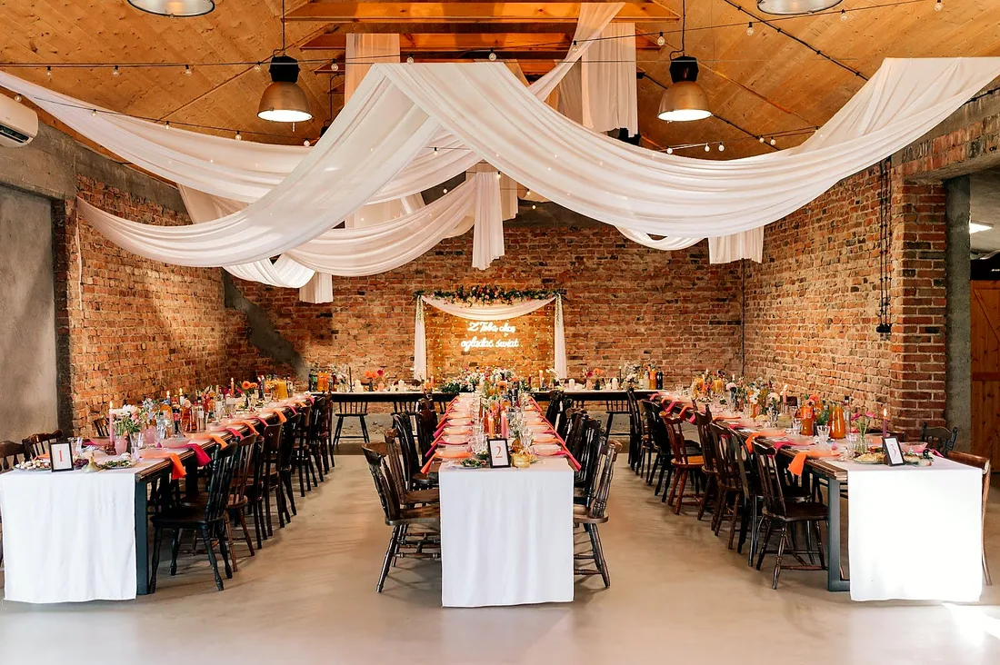
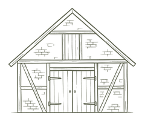
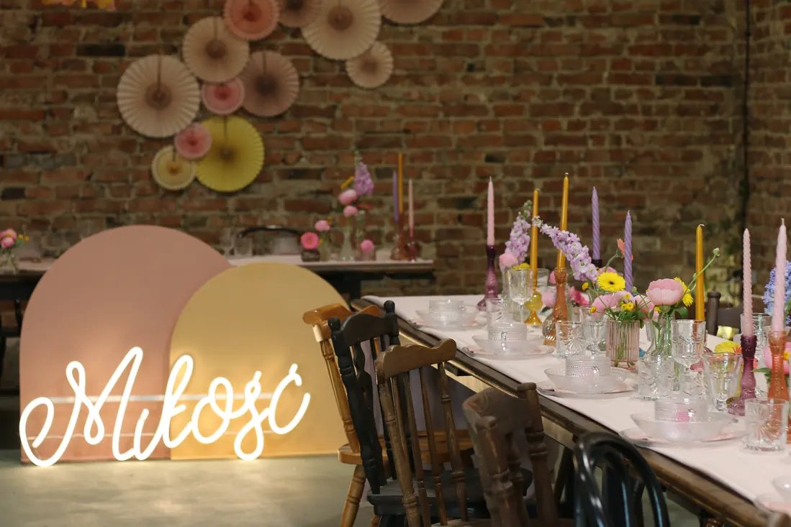
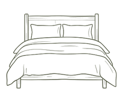
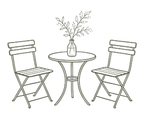
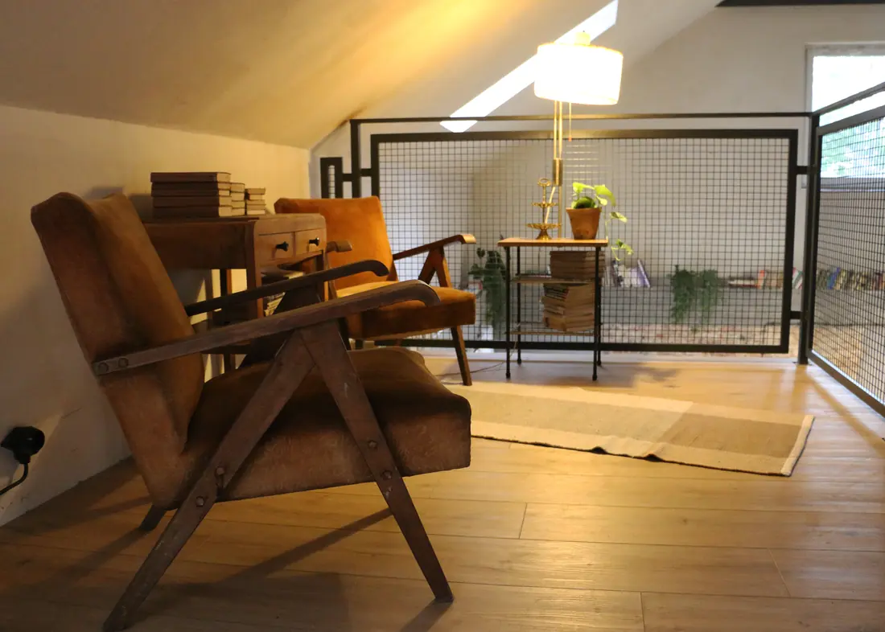

WESELA · PRZYJĘCIA · DOM DO WYNAJĘCIA
StodołaGoślice 15
Kameralna sala na wesela i przyjęcia pod Płockiem
Zapytaj o termin
STODOŁA GOŚLICE 15
Wesela i przyjęcia
w sielskim otoczeniu
Stare gospodarstwo w Goślicach urządziliśmy tak, jak sami lubimy świętować z najbliższymi. Po kolacji w ceglanej stodole wystarczy kilka kroków, żeby wyjść pod rozgwieżdżone niebo.





PRZYJĘCIA
Na ważne okazje
Czuwamy nad przebiegiem dnia od pierwszego toastu do ostatniego tańca, więc wy możecie po prostu świętować z najbliższymi.
Do wyboru menu klasyczne, wegetariańskie i wegańskie.
 Do wyboru menu klasyczne, wegetariańskie i wegańskie.
Do wyboru menu klasyczne, wegetariańskie i wegańskie.FRAGMENTY OPINII Z GOOGLE
Opinie o Goślicach
„Nie mogliśmy wymarzyć sobie lepszego miejsca…”
„Przemiła i profesjonalna obsługa, pyszne jedzenie i niepowtarzalny klimat.”
„Domek w świetnym stylu.”

PRZY WSPÓLNYM STOLE
Stodoła Goślice 15
DOM Z 1937 ROKU
Nocleg w Goślicach
Kiedy w stodole gasną światła, najbliżsi nie muszą szukać taksówki. Kilka kroków dalej czeka przedwojenny dom z kominkiem, w którym rano wystarczy zaparzyć kawę i wyjść z nią na taras.

8osób na nocleg
Ogródi taras przy domu

GALERIA
Wnętrza i detale
 Kwiaty na stole
Kwiaty na stole Stare meble w stodole
Stare meble w stodole Kolorowe dekoracje
Kolorowe dekoracje Przedmioty z historią
Przedmioty z historią Ceglane wnętrze
Ceglane wnętrze Nakryty stół
Nakryty stół Domowa jadalnia
Domowa jadalnia Miłość w Goślicach
Miłość w Goślicach

Kąt na antresoli Kwiaty i stara cegła
Kwiaty i stara cegła Przy kominku
Przy kominku Stodoła przed przyjęciem
Stodoła przed przyjęciemAGATA I ANDRZEJ
Poznaj gospodarzy
Mamy słabość do czasów PRL i mebli z historią. Krzesła, kryształy i książki zbierane latami nadają charakter naszemu domowi i stodole.
O nas i naszym miejscuGOŚLICE 15 · OKOLICE PŁOCKA
Odwiedź nas
Stodołę i dom pokazujemy po wcześniejszym umówieniu. Zadzwoń, ustalimy dogodny termin.
Wyznacz trasę
UMÓW WIZYTĘ
Zapraszamy do Goślic
Zadzwoń, zapytaj o termin i umów obejrzenie stodoły lub domu.
Umów wizytę